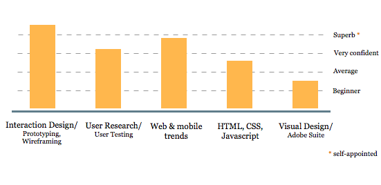

About me
Hi, I'm Kate and I’m a UX researcher with experience in Interaction Design.
Having a background in Computer Science I like solving structural and complex problems. Being an amateur artist for years and having experience of testing UI in the past, I also have an eye for detail, color and shape.
What am I interested in?
I'm looking for interesting opportunities in UX Research. Also interested in roles where UX research is combined with interaction design or IA.

Summary of skills
| User Experience Design and Research: | Development of Personas, scenarios, user stories, user flows, Design user research test strategies (test plans), Moderate and conduct real users on-site tests and online tests, focus groups, Perform User/Task analysis, A/B testing, Compile testing results, present and iterate, Design Surveys and Card Sorting, Study detailed analytics, Design Interactions, Participate in rapid prototyping. Morae Manager, Google Analytics, Heap, Typeform, SurveyMonkey. |
| Wireframe creation and iteration: | Axure, Sketch, OmniGraffle, Balsamiq, InVision. |
| Other tools: | MS Visio, TypeForm, Survey Monkey, Git, Virtual PC, Virtual PC Server, VMWare, Hyper-V, JMeter, Fiddler, Process Explorer, JIRA, TRAC, WTT, MSBuild, Microsoft Test Manager, SVN/CVS |
| Adobe Creative Suite: | Illustrator, Photoshop, After Effects, Dreamweaver. |
| Web coding, digital prototyping: | HTML5, CSS3, jQuery, JavaScript. |
| Leadership strategy: | Make presentations to the team and stakeholders, Drive design solutions independently, Offer implementation suggestions from a user-centered perspective. |
| Design principles: | Understand and use design patterns and best practices. Use artistic background on color theory and composition |
| Daily tools: | JIRA, Trac, Asana, Microsoft Office apps. |
| Version Control systems: | GIT, SVN, CVS. |
| Software Test Automation, QA: | SQL(TSQL), Java, Android Java, XML, JSON, jUnit, Mockito, Robolectric, jMeter, Robotium; Eclipse, Android Studio,Visual Studio; Virtual PC, VMWare, Hyper-V. |
How to contact me?
My email: kativv@gmail.com My LinkedIn: https://www.linkedin.com/in/katekoroleva